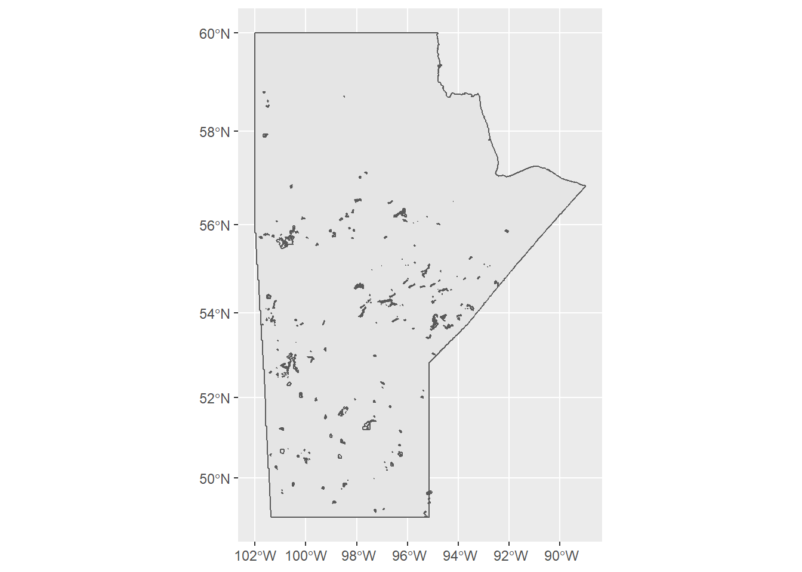
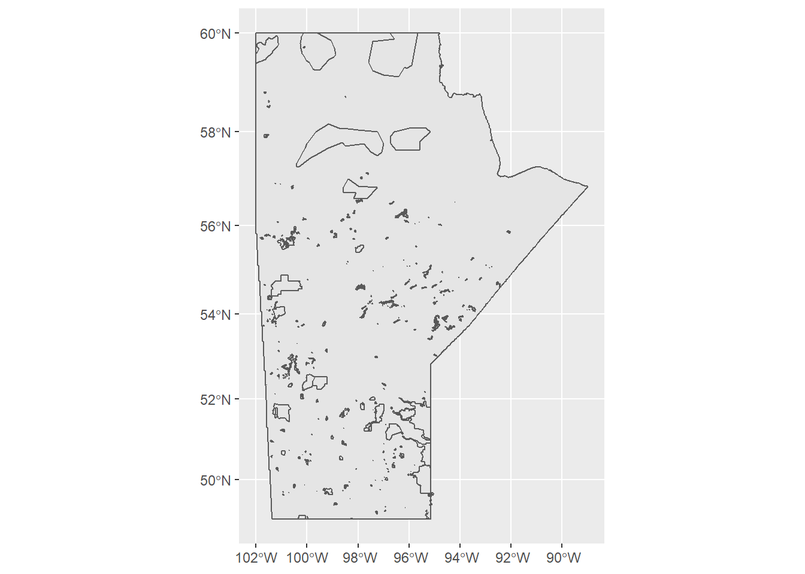
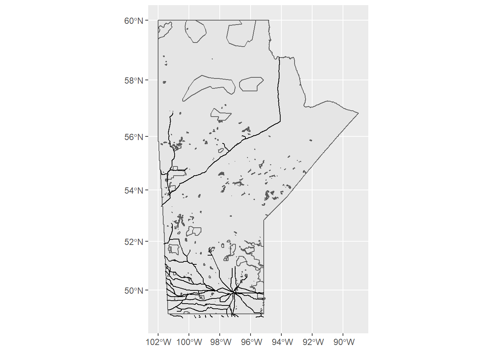
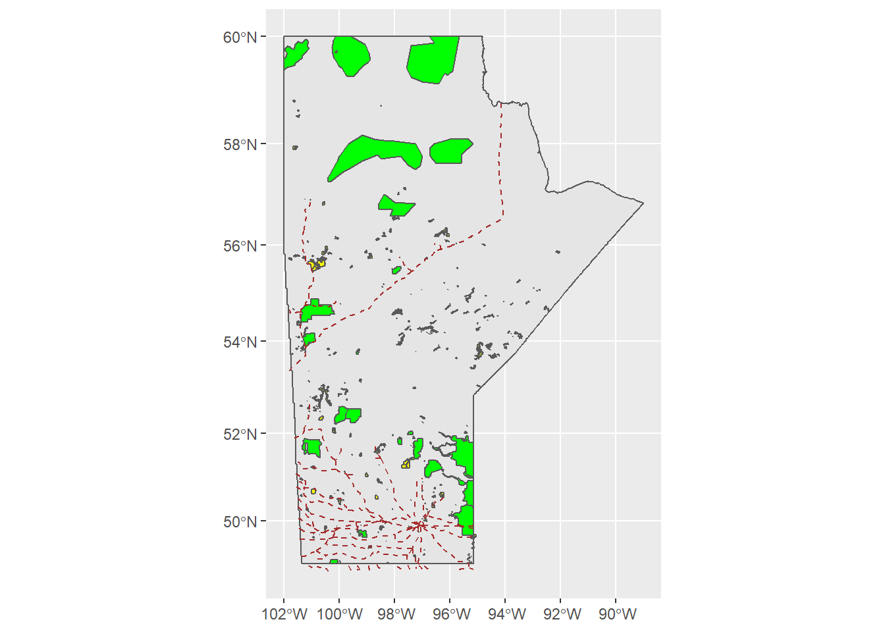
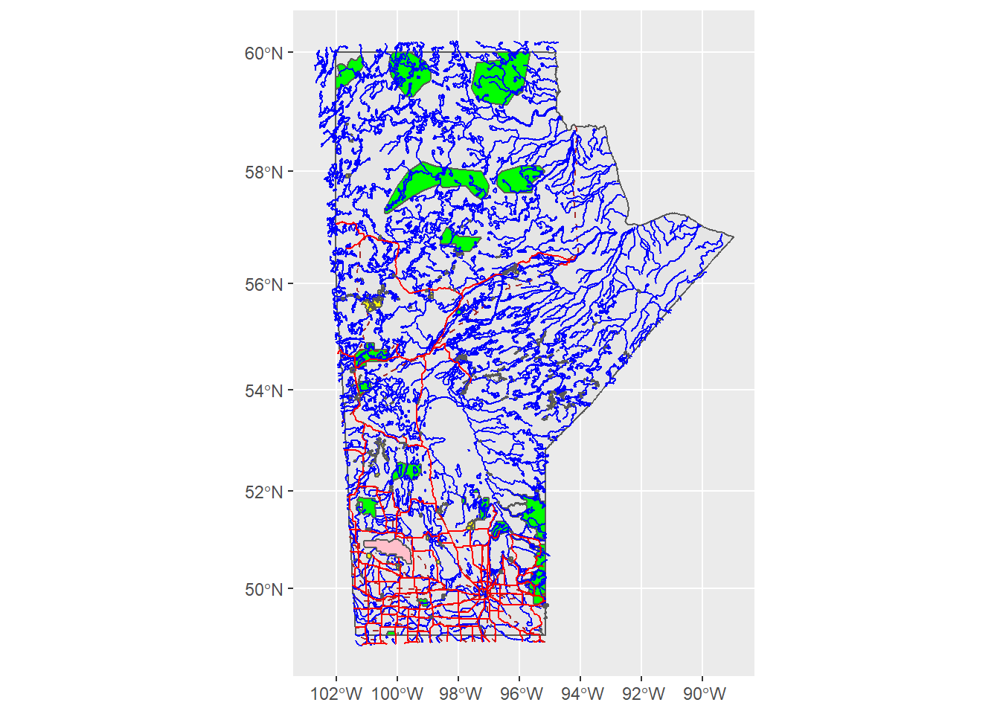

Chapter 3 Working with Vector Data
We will use the R package sf for handling vector data. You will have to download and install this package from the CRAN repository (review section 4.10 of the MUN Biology R manual if need a reminder of how to do this).
install.packages("sf", repos = "http://cran.us.r-projct.org")## Installing package into 'C:/Users/ywiersma/Documents/R/win-library/4.1'
## (as 'lib' is unspecified)library(sf) ## Linking to GEOS 3.9.1, GDAL 3.2.1, PROJ 7.2.1To plot the data (i.e., make a map) we will also need the package ggplot2, so make sure to load and install that as well.
install.packages("ggplot2", repos = "http://cran.us.r-projct.org")## Installing package into 'C:/Users/ywiersma/Documents/R/win-library/4.1'
## (as 'lib' is unspecified)library(ggplot2)Set your working directory to the spot where you downloaded the data in the previous chapter 2. If you do not remember how to check, and set your working directory, review section 4.2.
Then read in the shapefile for the boundary outline of the province of Manitoba, the provincial parks layer and the Aboriginal lands layer as follows (note that you may have to change the file path and file names if you named them differently when you downloaded. In the text below, my GIS files are in a sub-folder named “GIS_MB”):
MB_outline <- st_read("GIS_MB/Manitoba_Provincial_Boundary.shp")
MB_parks <-st_read("GIS_MB/Manitoba_Parks.shp")IndigenousLands <- st_read("Aboriginal_Lands.shp")
Create a map of the province of Manitoba boundary and the Indigenous lands layers using ggplot using the code snippet below:
ggplot() +
geom_sf(data = MB_outline) +
geom_sf(data = IndigenousLands)Notice that the Indigenous Lands layer is for all of Canada. To clip this to just include those within the province of Manitoba, execute this code:
MB_IndigenousLands <- IndigenousLands[MB_outline, ]If you substitute the new layer “MB_IndigenousLands” in the ggplot code snippet you used above, you will only see the lands that are within the provincial boundaries of Manitoba, and your map should look like this:

Now add in the layer for provincial parks
ggplot() +
geom_sf(data = MB_outline) +
geom_sf(data = MB_IndigenousLands) +
geom_sf(data = MB_parks)
Now, try reading in and adding the layer for railways, using the code below:
MB_rail <- st_read("GIS_MB/rail.shp")
ggplot() +
geom_sf(data = MB_outline) +
geom_sf(data = MB_IndigenousLands) +
geom_sf(data = MB_parks) +
geom_sf(data = MB_rail)Note that you get an error message that says something about a missing crs. “crs” stand for “co-ordinate reference system”. This refers to how map data a projected to transform the round earth to a flat map. Read more about projections in the ConservationGIS module.
Verify that the MB_rail layer has no crs with the following code:
st_crs(MB_rail)## Coordinate Reference System: NANow use the same st_crs function to check the CRS for the MB_parks layer. Notice the code right at the IDend of the output. It is 26914, which is the reference code for that file’s projection (which is in NAD 83, UTM Zone 14N).
To assign the existing projection system for MB_parks to the MB_rail layer, execute the following code:
MB_rail <- st_set_crs(MB_rail, 26914)Now try making the map with the provincial boundary, the Manitoba Indigenous lands layer and the rail layer.

This is starting to look like all the pieces are coming together, but it is hard to see the different features without some kind of colour coding or other symbology.
Details on how to change symbols can be viewed by typing vignette("ggplot2-specs") at the prompt.
An example to make the Indigenous lands yellow and the rail line a brown dashed line is below:
ggplot() +
geom_sf(data = MB_outline) +
geom_sf(data = MB_IndigenousLands, fill = "yellow") +
geom_sf(data = MB_parks, fill = "green") +
geom_sf(data = MB_rail, lty = "dashed", col = "brown")
Now, try reading in the following additional layers and symbolize them as listed. Your final map should look like the one below.
NOTE if you run into CRS error messages, simply go through the steps above to fix them.
NOTE pay attention to the order in which you read things into ggplot, so that your final map matches the one below.
Riding Mountain National Park - pink Roads layer - red Water layer - blue

In the chapter4, we will explore how we can use the data underlying this map to do an area analysis.